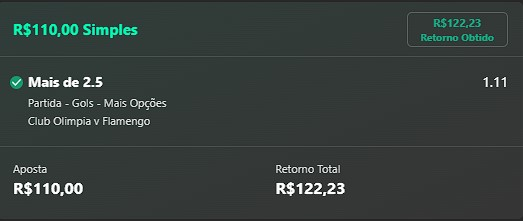

Utilizamos o método xG
O que é o xG?
De modo simples, o xG (ou gols previstos) é a probabilidade que um chute tem de resultar em um gol com base nas características daquele chute e dos eventos que levaram até ele. Algumas dessas características/variáveis incluem: Localização de quem chuta: a que distância ele estava do gol e qual o ângulo de chute? Parte do corpo: foi uma cabeçada ou um chute? Tipo de passe: a origem é de uma bola em movimento, cruzamento, bola parada, etc? Tipo de ataque: foi um ataque coordenado ou roubada de bola? Foi um rebote? A defesa teve tempo de entrar em posição? Foi logo após um drible? Cada chute é comparado com milhares de chutes com características semelhantes para determinar a probabilidade desse chute resultar em um gol. A probabilidade é o total esperado de gols. Um xG de 0 é um erro garantido, enquanto que um xG de 1 é um gol certo. Um xG de 0.5 indica que se chutes idênticos fossem tentados 10 vezes, é esperado que 5 resultem em gols. Existem diversos modelos xG que utilizam técnicas e variáveis semelhantes que tentam chegar na mesma conclusão. O modelo que o Fbref utiliza é fornecido pela Opta. O modelo de xG da Opta inclui os diversos fatores acima, não apenas fatores como localização e ângulo. O modelo também considera a clareza do caminho de quem chuta para o gol, a quantidade de pressão que esse jogador está sofrendo da defesa, a posição do goleiro, e muito mais. Isso significa que seu modelo xG leva em consideração a defesa e o goleiro ao determinar as chances de um chute chegar ao gol.Veja exemplos de alavancagem que fizemos
Sempre começamos com um valor e multiplicamos ele com juros compostos, jogo após jogo seguindo o critério do XG
